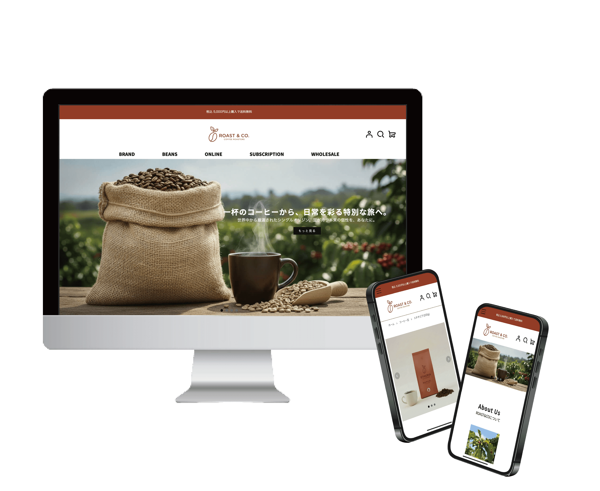
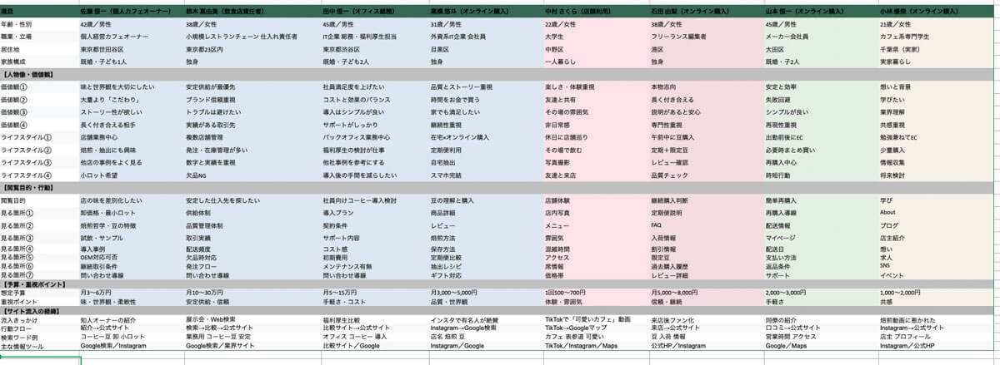
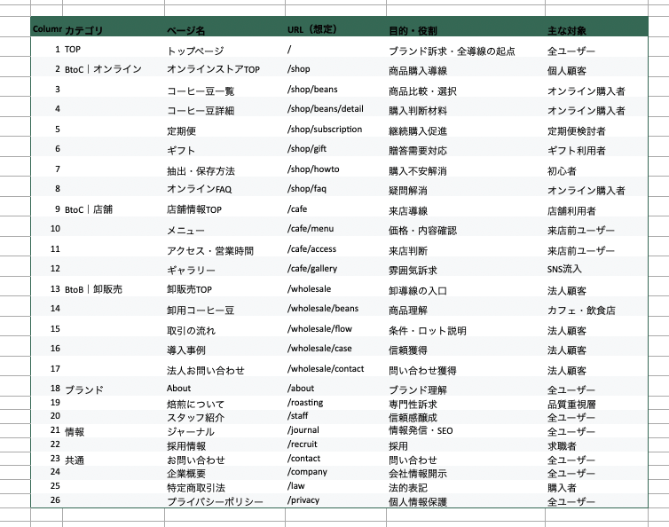
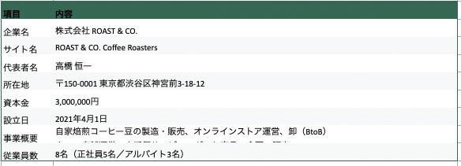

自家焙煎スペシャルティコーヒーの オンライン販売・店舗・法人卸を展開するブランドサイトを想定して制作しました。
サイトを見る
ブランド名
ROAST & CO Coffee Roasters
サイトの目的
- 商品購入
- 定期便申し込み
- 法人問い合わせ
ターゲット
コーヒーを日常的に楽しむ個人ユーザーに加え、定期便を利用したい方、店舗利用を検討する方、法人卸を検討する事業者を想定しています。
ペルソナ

法人3名、オンライン購入4名、店舗利用1名を設定しました。
コンセプト
スペシャルティコーヒーの上質な世界観を伝えながら、 オンライン購入・定期便・店舗利用・法人卸といった複数の目的に 直感的にアクセスできる情報設計を意識しました。 写真や余白を活かした落ち着きのあるデザインでブランドへの共感を高め、 自然に商品購入へつながる体験を目指しています。
デザインについて
ユーザーがコーヒーの魅力を感じながら、自然に商品購入へ進める導線を意識してサイト構成を設計しました。トップページではコーヒー豆の写真を大きく配置し、サイトを訪れた瞬間に商品の魅力やブランドの雰囲気が伝わるようにしています。また、ユーザーが目的の情報に迷わずアクセスできるよう、グローバルナビゲーションには「BRAND」「BEANS」「ONLINE」「SUBSCRIPTION」などのカテゴリーを配置し、サイト全体の情報構造を分かりやすく整理しました。
商品ページや購入導線につながるボタンはファーストビュー付近に配置し、ユーザーが次の行動を取りやすいレイアウトにしています。さらに、写真・テキスト・余白のバランスを意識することで、コンテンツが読みやすく、商品が引き立つシンプルなデザインを心がけました。全体として、ユーザーが直感的に操作できることと、コーヒーの世界観が伝わることの両立を意識してデザインしています。
サイトマップ

全 26ページ
競合サイトリサーチ
合計 55社（ブルーボトルコーヒー、コメダ珈琲、その他日本、海外のサイトなど）
会社概要

こだわったポイント
本場サンフランシスコのコーヒーショップの雰囲気をイメージし、落ち着いた配色と余白を活かしたシンプルなレイアウトでブランドの世界観を表現しました。トップページではコーヒー豆やカップの写真を大きく配置し、視覚的にコーヒーの魅力が伝わるデザインを意識しています。また、ブランドへの理解や共感を高めるため、トップページ下部にブランドストーリーを掲載し、ショップの背景やコンセプトが伝わる構成にしました。
商品ページでは、ユーザーが購入を検討しやすいようクーポンの案内を表示し、購入のきっかけを作る導線を設けました。さらに、コーヒー豆と一緒に関連商品も購入できるよう、商品ページ内に関連商品の表示を追加しています。ユーザーが迷わず商品を選び、スムーズに購入できるような導線設計を意識しました。
コーディング時間
リサーチ 16h、素材制作 9h、デザイン 5h、コーディング 44h (レスポンシブ対応含む)
合計 74h
制作日
2026年2月